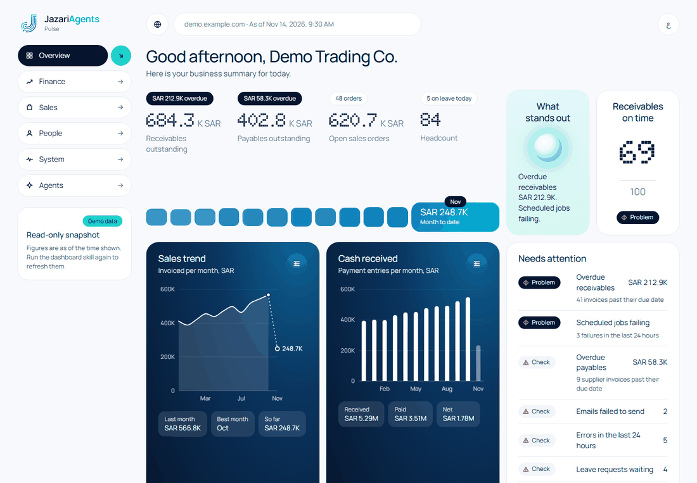

JazariAgents
Manual
Nine agents that build on the Frappe framework and run the business on top of it. 335 capabilities across 22 skills, each traced to an official Frappe page, plus a one-page dashboard of your business.
Nine agents that build on the Frappe framework and run the business on top of it. 335 capabilities across 22 skills, each traced to an official Frappe page, plus a one-page dashboard of your business.
Before anything is changed or deleted, a full copy is written to .frappe/snapshots/ — the record, the prior values, and the bytes of any attachment. If the snapshot cannot be written and verified, the action does not happen. Ask any agent to restore it.
Honest about undo. Settings roll back exactly. Deleted records return as new records with new IDs, so links from other documents stay broken. Submitted invoices, posted journals, payroll runs, sent emails and captured payments cannot be undone at all — the remedy is a credit note or a reversing entry, and that stays your call.
The agents never delete or bulk-edit anything you did not specifically ask for, never follow instructions found inside your own data, never issue refunds or payouts on their own initiative, and never type your password. Anything over 25 records stops and shows the count first. Changes go to .frappe/audit.log; every request, including refusals, goes to .frappe/tasklog.md.
/plugin marketplace add JazariAgents/agents-for-frappe-erpnext/plugin install jazari-frappe-erpnext@jazari-agents/reload-plugins) so the skills load.Prefer not to use a marketplace? Download the repository from github.com/JazariAgents/agents-for-frappe-erpnext and start Claude Code with claude --plugin-dir <folder>/plugins/jazari-frappe-erpnext. To check the files are intact: claude plugin validate <folder>/plugins/jazari-frappe-erpnext.
.frappe/ in your workspace. Safety copies, logs and your connection details live there, on your computer.The agents try these in order and tell you which one they are using. They are alternatives: most work can be done through any of them.
| Route | What you need | Good for |
|---|---|---|
| Frappe's own MCP server | Frappe v16.53 or later with Enable MCP on (it is on for new sites). You add your site to Claude as a connector and sign in in your browser. | Everyday work. No key is pasted anywhere, and every action runs with your own permissions. |
| frappectl, Frappe's official command line | Installed on your computer and signed in with frappectl auth login <your site> --oauth --read-only. | Reports, files and large reads. Read-only unless you say otherwise. |
| API key and secret | A key generated on your User record. It is saved in .frappe/credentials.txt on your computer and never shown in chat. | Any site from v15. The fallback when the first two are not available. |
| In the interface | Nothing. | No key at all, or the few things Frappe only shows on screen. The agent guides, you click. |
| bench | A terminal on your own server. | Sites, apps, migrations and backups. On Frappe Cloud the Cloud dashboard covers the same ground. |
Say "show me my dashboard". The agent reads your site and builds Jazari Pulse: one page with six screens.

Each time an agent finishes a request it adds one line to .frappe/activity.jsonl on your computer: which agent, what was asked, how it ended (done, partly done, failed, or refused), how many records changed, and whether a safety copy was taken first. The Agents screen of the dashboard is built from that file: requests in the last 30 days, how they ended, how often a safety copy was taken, and a row per agent. Nothing in that file is sent anywhere.
From Frappe v16.36 a site can run Automation Flows: when a record is created, changed or reaches a date, do several things in order, with waits and branches, and no code. Ask Urwah in plain words, for example "when a sales order over 50,000 is submitted, assign it to the sales manager and email them, then remind them after two days if it is still open."
To stop a flow, ask for it to be switched off. A flow that has already run cannot be deleted, only switched off.

Setup & Configuration
Gets a new site into a state where real work can happen: company, fiscal year, chart of accounts, users, naming, and hosting on Frappe Cloud.

Bulk Import & Migration
Moves data in by the thousand — spreadsheets, opening balances, a whole chart of accounts, or a migration from another system. Always dry-runs first.

App Builder & Customizer
Builds on the framework itself: new apps, DocTypes, fields, controllers, workflows and print formats — and the manufacturing side, where a bill of materials is its own kind of blueprint.
Inventory & Stock
Knows where every item is and what it is worth: warehouses, stock entries, reconciliation, batches, serial numbers and valuation.

Accounting, Tax & Reporting
The money: invoices, payments, journals, reconciliation, budgets, assets, tax and VAT, loans, and every report the business is judged by.

Marketing & Website
The public face: website pages, blogs, themes and SEO, the shop, pricing rules, coupons, loyalty, campaigns and newsletters.

Sales Operations & Projects
Keeps orders moving: quotations, sales orders, picking, packing, delivery, point of sale, and the projects and timesheets behind service work.

Customers, Support & People
Everyone the business deals with: leads and deals, support tickets and SLAs, employees, leave, attendance and payroll, students and learners.

API, Bench & Automation
The plumbing: connecting Claude to the site, the REST API, webhooks and background jobs, the bench CLI, backups — and putting things back when something goes wrong.
Full profiles: Agents (English) · بالعربية
1,612 pages of Frappe's official documentation ship in the docs/ folder: every page behind every capability. The agents read those files rather than working from memory, so they quote Frappe's own words, they work offline, and they can tell you when a page was last updated if your site and the page disagree. Screenshots are not included; where a step is only a picture, the agent says so.
Most capabilities can be done either through a connection or by clicking in the interface. The counts below are the route each one is documented under.
| Mode | When it is used | Capabilities |
|---|---|---|
| API | Through the MCP server, frappectl or an API key. Fastest and most precise. | 90 |
| In the interface | No connection, or something Frappe only shows in the Desk. | 195 |
| bench CLI | On your own server: sites, apps, migrations, backups. | 26 |
| Guided | Claude explains and checks; you click. | 24 |
Gets a new site into a state where real work can happen: company, fiscal year, chart of accounts, users, naming, and hosting on Frappe Cloud.
Skills: frappe-cloud, frappe-restore, frappe-setup, frappe-users-permissions
| What it can do | How | Undo | Skill |
|---|---|---|---|
| Add a custom app to a bench | In the interface | restores exactly | frappe-cloud |
| Understand benches and bench groups | Guided | safe — reads or creates | frappe-cloud |
| Create a bench group on Frappe Cloud | In the interface | safe — reads or creates | frappe-cloud |
| Update a bench group | In the interface | restores exactly | frappe-cloud |
| Manage billing and payments | In the interface | cannot be undone | frappe-cloud |
| Add a custom domain to a Frappe Cloud site | In the interface | restores exactly | frappe-cloud |
| Install a marketplace app | In the interface | restores exactly | frappe-cloud |
| Publish an app to the marketplace | In the interface | restores exactly | frappe-cloud |
| Create a server | In the interface | safe — reads or creates | frappe-cloud |
| Back up a Frappe Cloud site | In the interface | safe — reads or creates | frappe-restore |
| Create a site on Frappe Cloud | In the interface | safe — reads or creates | frappe-cloud |
| Move a site between benches or servers | In the interface | restores exactly | frappe-cloud |
| Change a site plan | In the interface | restores exactly | frappe-cloud |
| Connect to a bench over SSH | In the interface | safe — reads or creates | frappe-cloud |
| Turn on two-factor authentication | In the interface | restores exactly | frappe-users-permissions |
| Read the audit trail | In the interface | safe — reads or creates | frappe-users-permissions |
| Hide fields with permission levels | In the interface | restores exactly | frappe-users-permissions |
| Group roles into a role profile | In the interface | restores exactly | frappe-users-permissions |
| Set role-based permissions | In the interface | restores exactly | frappe-users-permissions |
| Understand permission types | Guided | safe — reads or creates | frappe-users-permissions |
| Restrict a user to specific records | In the interface | restores exactly | frappe-users-permissions |
| Add and manage users | In the interface | safe — reads or creates | frappe-users-permissions |
| Set up the chart of accounts | In the interface | restores exactly | frappe-setup |
| Set up a company | In the interface | safe — reads or creates | frappe-setup |
| Configure currencies and exchange rates | In the interface | restores exactly | frappe-setup |
| Connect an email account | In the interface | restores exactly | frappe-setup |
| Set the fiscal year | In the interface | restores exactly | frappe-setup |
| Run the ERPNext getting-started checklist | Guided | safe — reads or creates | frappe-setup |
| Set global defaults | In the interface | restores exactly | frappe-setup |
| Add a letter head | In the interface | restores exactly | frappe-setup |
| Configure naming series | In the interface | restores exactly | frappe-setup |
| Change system settings | In the interface | restores exactly | frappe-setup |
Moves data in by the thousand — spreadsheets, opening balances, a whole chart of accounts, or a migration from another system. Always dry-runs first.
Skills: frappe-accounting, frappe-data-import, frappe-inventory
| What it can do | How | Undo | Skill |
|---|---|---|---|
| Enter opening balances | In the interface | restores exactly | frappe-accounting |
| Import opening invoices | In the interface | restores exactly | frappe-accounting |
| Import advances, payments and balances | In the interface | restores exactly | frappe-data-import |
| Rename records in bulk | In the interface | restores exactly | frappe-data-import |
| Update many records at once | In the interface | restores exactly | frappe-data-import |
| Import a chart of accounts | In the interface | restores exactly | frappe-data-import |
| Export records to a spreadsheet | In the interface | safe — reads or creates | frappe-data-import |
| Import records from a spreadsheet | In the interface | restores exactly | frappe-data-import |
| Prepare and map legacy data | Guided | safe — reads or creates | frappe-data-import |
| Import accounting masters | In the interface | restores exactly | frappe-data-import |
| Migrate from QuickBooks | In the interface | restores exactly | frappe-data-import |
| Validate a migration | Guided | safe — reads or creates | frappe-data-import |
| Load opening stock | In the interface | restores exactly | frappe-inventory |
Builds on the framework itself: new apps, DocTypes, fields, controllers, workflows and print formats — and the manufacturing side, where a bill of materials is its own kind of blueprint.
Skills: frappe-app-builder, frappe-buying, frappe-inventory, frappe-manufacturing, frappe-website
| What it can do | How | Undo | Skill |
|---|---|---|---|
| Understand the framework architecture | Guided | safe — reads or creates | frappe-app-builder |
| Bundle app assets | bench CLI | safe — reads or creates | frappe-app-builder |
| Create a new Frappe app | bench CLI | safe — reads or creates | frappe-app-builder |
| Query data with the database API | Guided | safe — reads or creates | frappe-app-builder |
| Read an app's directory structure | Guided | safe — reads or creates | frappe-app-builder |
| Work with documents in Python | Guided | safe — reads or creates | frappe-app-builder |
| Wire app behaviour with hooks | Guided | safe — reads or creates | frappe-app-builder |
| Render templates with the Jinja API | Guided | safe — reads or creates | frappe-app-builder |
| Build portal and web pages | Guided | safe — reads or creates | frappe-app-builder |
| Build safe queries with the query builder | Guided | safe — reads or creates | frappe-app-builder |
| Create a new site for an app | bench CLI | safe — reads or creates | frappe-app-builder |
| Design an app screen in Frappe Studio | In the interface | restores exactly | frappe-app-builder |
| Test an app before release | Guided | safe — reads or creates | frappe-app-builder |
| Publish a web form | In the interface | safe — reads or creates | frappe-app-builder |
| Run subcontracting | In the interface | restores exactly | frappe-buying |
| Use a child table | In the interface | safe — reads or creates | frappe-app-builder |
| Write controller methods | Guided | safe — reads or creates | frappe-app-builder |
| Create a DocType | In the interface | safe — reads or creates | frappe-app-builder |
| Turn on DocType features | In the interface | safe — reads or creates | frappe-app-builder |
| Pick the right field type | In the interface | safe — reads or creates | frappe-app-builder |
| Add a form script | Guided | safe — reads or creates | frappe-app-builder |
| Set how documents are named | In the interface | safe — reads or creates | frappe-app-builder |
| Choose the right kind of DocType | Guided | safe — reads or creates | frappe-app-builder |
| Use virtual doc fields | Guided | safe — reads or creates | frappe-app-builder |
| Build a bill of materials | API | restores exactly | frappe-manufacturing |
| Design a BOM with the BOM creator | In the interface | cannot be undone | frappe-manufacturing |
| Update BOMs in bulk | In the interface | restores exactly | frappe-manufacturing |
| Plan capacity | Guided | safe — reads or creates | frappe-manufacturing |
| Record work on a job card | API | cannot be undone | frappe-manufacturing |
| Plan material requirements | Guided | safe — reads or creates | frappe-manufacturing |
| Define operations and routing | In the interface | restores exactly | frappe-manufacturing |
| Watch the plant floor | In the interface | safe — reads or creates | frappe-manufacturing |
| Plan production | API | restores exactly | frappe-manufacturing |
| Handle scrap and disassembly | In the interface | restores exactly | frappe-manufacturing |
| Configure manufacturing settings | In the interface | restores exactly | frappe-manufacturing |
| Run a work order | API | cannot be undone | frappe-manufacturing |
| Set up workstations | In the interface | restores exactly | frappe-manufacturing |
| Add a client script | In the interface | restores exactly | frappe-app-builder |
| Add a custom field | In the interface | restores exactly | frappe-app-builder |
| Customize a form | In the interface | restores exactly | frappe-app-builder |
| Build a print format | In the interface | restores exactly | frappe-app-builder |
| Set up an approval workflow | In the interface | restores exactly | frappe-app-builder |
| Define item attributes | In the interface | restores exactly | frappe-inventory |
| Sell a product bundle | In the interface | restores exactly | frappe-inventory |
| Create item variants | In the interface | restores exactly | frappe-inventory |
| Build pages with Frappe Builder | In the interface | restores exactly | frappe-website |
| Bind data to a Builder page | In the interface | restores exactly | frappe-website |
Knows where every item is and what it is worth: warehouses, stock entries, reconciliation, batches, serial numbers and valuation.
Skills: frappe-buying, frappe-inventory
| What it can do | How | Undo | Skill |
|---|---|---|---|
| Receive goods | API | cannot be undone | frappe-buying |
| Return goods to a supplier | API | cannot be undone | frappe-buying |
| Track batches | API | restores exactly | frappe-inventory |
| Use the serial and batch bundle | API | restores exactly | frappe-inventory |
| Close a stock period | In the interface | cannot be undone | frappe-inventory |
| Make a stock entry | API | cannot be undone | frappe-inventory |
| Create and manage items | API | restores exactly | frappe-inventory |
| Group items | In the interface | restores exactly | frappe-inventory |
| Read the stock ledger | In the interface | safe — reads or creates | frappe-inventory |
| Check stock levels | In the interface | safe — reads or creates | frappe-inventory |
| Set putaway rules | In the interface | restores exactly | frappe-inventory |
| Inspect incoming quality | API | restores exactly | frappe-inventory |
| Reconcile physical stock | API | cannot be undone | frappe-inventory |
| Reserve stock for an order | In the interface | restores exactly | frappe-inventory |
| Track serial numbers | API | restores exactly | frappe-inventory |
| Configure stock settings | In the interface | restores exactly | frappe-inventory |
| Manage units of measure | In the interface | restores exactly | frappe-inventory |
| Choose a valuation method | Guided | safe — reads or creates | frappe-inventory |
| Set up warehouses | API | restores exactly | frappe-inventory |
The money: invoices, payments, journals, reconciliation, budgets, assets, tax and VAT, loans, and every report the business is judged by.
Skills: frappe-accounting, frappe-buying, frappe-inventory, frappe-learning, frappe-lending, frappe-projects, frappe-reports, frappe-selling
| What it can do | How | Undo | Skill |
|---|---|---|---|
| Manage fixed assets | API | restores exactly | frappe-accounting |
| Reconcile the bank | In the interface | restores exactly | frappe-accounting |
| Set and track a budget | In the interface | restores exactly | frappe-accounting |
| Set up cost centers | In the interface | restores exactly | frappe-accounting |
| Issue a credit note | API | cannot be undone | frappe-accounting |
| Issue a debit note | API | cannot be undone | frappe-accounting |
| Set up deferred revenue and expense | In the interface | restores exactly | frappe-accounting |
| Run asset depreciation | In the interface | cannot be undone | frappe-accounting |
| Use accounting dimensions | In the interface | restores exactly | frappe-accounting |
| Chase overdue invoices with dunning | API | cannot be undone | frappe-accounting |
| Freeze accounting entries | In the interface | restores exactly | frappe-accounting |
| Post a journal entry | API | cannot be undone | frappe-accounting |
| Handle multi-currency accounting | Guided | safe — reads or creates | frappe-accounting |
| Record a payment entry | API | cannot be undone | frappe-accounting |
| Reconcile payments against invoices | In the interface | restores exactly | frappe-accounting |
| Send a payment request | API | cannot be undone | frappe-accounting |
| Set payment terms | In the interface | restores exactly | frappe-accounting |
| Close an accounting period | In the interface | cannot be undone | frappe-accounting |
| Record a purchase invoice | API | cannot be undone | frappe-accounting |
| Raise a sales invoice | API | cannot be undone | frappe-accounting |
| Track shareholders and share transfers | In the interface | restores exactly | frappe-accounting |
| Send a statement of accounts | In the interface | cannot be undone | frappe-accounting |
| Bill customers on a subscription | API | cannot be undone | frappe-accounting |
| Agree a blanket order | API | restores exactly | frappe-buying |
| Add landed costs | API | restores exactly | frappe-buying |
| Raise a material request | API | restores exactly | frappe-buying |
| Place a purchase order | API | cannot be undone | frappe-buying |
| Send a request for quotation | API | cannot be undone | frappe-buying |
| Score suppliers | In the interface | restores exactly | frappe-buying |
| Create and manage suppliers | API | restores exactly | frappe-buying |
| Record a supplier quotation | API | restores exactly | frappe-buying |
| Collect fees | In the interface | cannot be undone | frappe-learning |
| Chart a result in Insights | In the interface | restores exactly | frappe-reports |
| Publish an Insights dashboard | In the interface | restores exactly | frappe-reports |
| Connect a data source in Insights | In the interface | restores exactly | frappe-reports |
| Use expressions in a query | In the interface | restores exactly | frappe-reports |
| Set Insights permissions | In the interface | restores exactly | frappe-reports |
| Write a query in Insights | In the interface | restores exactly | frappe-reports |
| Share a dashboard and control access | In the interface | restores exactly | frappe-reports |
| Charge for a course | In the interface | restores exactly | frappe-learning |
| Process a loan application | In the interface | restores exactly | frappe-lending |
| Disburse a loan | In the interface | cannot be undone | frappe-lending |
| Accrue interest | In the interface | cannot be undone | frappe-lending |
| Set up a loan product | In the interface | restores exactly | frappe-lending |
| Record a loan repayment | In the interface | cannot be undone | frappe-lending |
| Manage loan security | In the interface | restores exactly | frappe-lending |
| Set activity costs | In the interface | restores exactly | frappe-projects |
| Bill a customer from a timesheet | API | cannot be undone | frappe-projects |
| Track project costing | In the interface | safe — reads or creates | frappe-projects |
| Measure project profitability | In the interface | safe — reads or creates | frappe-projects |
| Use the standard accounting reports | In the interface | safe — reads or creates | frappe-reports |
| Produce a balance sheet | In the interface | safe — reads or creates | frappe-reports |
| Produce a cash flow report | In the interface | safe — reads or creates | frappe-reports |
| Build a custom report | In the interface | restores exactly | frappe-reports |
| Build ERPNext dashboards | In the interface | restores exactly | frappe-reports |
| Read the general ledger | In the interface | safe — reads or creates | frappe-reports |
| Produce a profit and loss report | In the interface | safe — reads or creates | frappe-reports |
| Age receivables and payables | In the interface | safe — reads or creates | frappe-reports |
| Enforce a customer credit limit | In the interface | restores exactly | frappe-selling |
| Consolidate POS invoices | In the interface | cannot be undone | frappe-selling |
| Run perpetual inventory | Guided | safe — reads or creates | frappe-inventory |
| Use tax categories | In the interface | restores exactly | frappe-accounting |
| Set item-level tax | In the interface | restores exactly | frappe-accounting |
| Set up KSA VAT reporting | In the interface | restores exactly | frappe-accounting |
| Create a purchase tax template | In the interface | restores exactly | frappe-accounting |
| Apply tax rules automatically | In the interface | restores exactly | frappe-accounting |
| Create a sales tax template | In the interface | restores exactly | frappe-accounting |
| Set up taxes | In the interface | restores exactly | frappe-accounting |
| Set up UAE VAT | In the interface | restores exactly | frappe-accounting |
| Set up withholding tax | In the interface | restores exactly | frappe-accounting |
The public face: website pages, blogs, themes and SEO, the shop, pricing rules, coupons, loyalty, campaigns and newsletters.
Skills: frappe-crm, frappe-selling, frappe-setup, frappe-website
| What it can do | How | Undo | Skill |
|---|---|---|---|
| Run a campaign | In the interface | restores exactly | frappe-crm |
| Send an email campaign | In the interface | cannot be undone | frappe-crm |
| Send a newsletter | In the interface | cannot be undone | frappe-crm |
| Capture leads from a web form | In the interface | restores exactly | frappe-crm |
| Issue coupon codes | In the interface | restores exactly | frappe-selling |
| Set item prices | API | restores exactly | frappe-selling |
| Run a loyalty program | In the interface | restores exactly | frappe-selling |
| Maintain price lists | API | restores exactly | frappe-selling |
| Apply a pricing rule | In the interface | restores exactly | frappe-selling |
| Run a promotional scheme | In the interface | restores exactly | frappe-selling |
| Create an email template | In the interface | restores exactly | frappe-setup |
| Publish a blog post | In the interface | restores exactly | frappe-website |
| Share files with Frappe Drive | In the interface | restores exactly | frappe-website |
| Control file access in Drive | In the interface | restores exactly | frappe-website |
| Share a Drive team folder | In the interface | restores exactly | frappe-website |
| Set up SEO for the website | Guided | safe — reads or creates | frappe-website |
| Run the shopping cart | In the interface | restores exactly | frappe-website |
| Change the website theme | In the interface | restores exactly | frappe-website |
| Publish a web page | In the interface | restores exactly | frappe-website |
| Set up the website | In the interface | restores exactly | frappe-website |
| Publish items to the shop | In the interface | restores exactly | frappe-website |
| Publish a wiki space | In the interface | restores exactly | frappe-website |
Keeps orders moving: quotations, sales orders, picking, packing, delivery, point of sale, and the projects and timesheets behind service work.
Skills: frappe-helpdesk, frappe-projects, frappe-reports, frappe-selling
| What it can do | How | Undo | Skill |
|---|---|---|---|
| Schedule maintenance visits | API | restores exactly | frappe-helpdesk |
| Run a project | API | restores exactly | frappe-projects |
| Manage tasks | API | restores exactly | frappe-projects |
| Start from a project template | In the interface | restores exactly | frappe-projects |
| Record timesheets | API | restores exactly | frappe-projects |
| Analyse sales | In the interface | safe — reads or creates | frappe-reports |
| Ship goods with a delivery note | API | cannot be undone | frappe-selling |
| Plan a delivery trip | API | restores exactly | frappe-selling |
| Pack an order | API | restores exactly | frappe-selling |
| Pick stock for an order | API | restores exactly | frappe-selling |
| Sell at the point of sale | In the interface | cannot be undone | frappe-selling |
| Configure a POS profile | In the interface | restores exactly | frappe-selling |
| Send a quotation | API | restores exactly | frappe-selling |
| Process a sales return | API | cannot be undone | frappe-selling |
| Confirm a sales order | API | cannot be undone | frappe-selling |
| Track sales people and commission | In the interface | restores exactly | frappe-selling |
| Book a shipment | API | cannot be undone | frappe-selling |
Everyone the business deals with: leads and deals, support tickets and SLAs, employees, leave, attendance and payroll, students and learners.
Skills: frappe-crm, frappe-helpdesk, frappe-hr, frappe-learning, frappe-selling
| What it can do | How | Undo | Skill |
|---|---|---|---|
| Move deals through the pipeline | API | restores exactly | frappe-crm |
| Reply with email templates | In the interface | restores exactly | frappe-crm |
| Capture leads | API | restores exactly | frappe-crm |
| Keep notes on a deal | API | restores exactly | frappe-crm |
| Work an opportunity in ERPNext | API | restores exactly | frappe-crm |
| Track organizations | API | restores exactly | frappe-crm |
| Set a CRM service level agreement | In the interface | restores exactly | frappe-crm |
| Customize deal statuses | In the interface | restores exactly | frappe-crm |
| Track CRM tasks | API | restores exactly | frappe-crm |
| Invite your sales team | In the interface | restores exactly | frappe-crm |
| Log calls against a deal | In the interface | restores exactly | frappe-crm |
| Message a contact on WhatsApp | In the interface | cannot be undone | frappe-crm |
| Run assessments | In the interface | restores exactly | frappe-learning |
| Set up programs and courses | In the interface | restores exactly | frappe-learning |
| Enrol students | In the interface | restores exactly | frappe-learning |
| Invite and manage agents | In the interface | restores exactly | frappe-helpdesk |
| Connect a support email account | In the interface | restores exactly | frappe-helpdesk |
| Track an issue in ERPNext | API | restores exactly | frappe-helpdesk |
| Publish knowledge base articles | In the interface | restores exactly | frappe-helpdesk |
| Set ticket priorities | In the interface | restores exactly | frappe-helpdesk |
| Route tickets automatically | In the interface | restores exactly | frappe-helpdesk |
| Answer faster with saved replies | In the interface | restores exactly | frappe-helpdesk |
| Set service level agreements | In the interface | restores exactly | frappe-helpdesk |
| Route tickets to teams | In the interface | restores exactly | frappe-helpdesk |
| Handle support tickets | API | restores exactly | frappe-helpdesk |
| Define ticket types | In the interface | restores exactly | frappe-helpdesk |
| Handle a warranty claim | API | restores exactly | frappe-helpdesk |
| Give an employee advance | API | restores exactly | frappe-hr |
| Run an appraisal cycle | In the interface | restores exactly | frappe-hr |
| Mark attendance | API | restores exactly | frappe-hr |
| Automate attendance from check-ins | In the interface | restores exactly | frappe-hr |
| Record employee check-ins | API | restores exactly | frappe-hr |
| Create employee records | API | restores exactly | frappe-hr |
| Process expense claims | API | restores exactly | frappe-hr |
| Maintain the holiday list | In the interface | restores exactly | frappe-hr |
| Track job applicants | API | restores exactly | frappe-hr |
| Post a job opening | API | restores exactly | frappe-hr |
| Allocate leave | API | restores exactly | frappe-hr |
| Approve a leave application | API | restores exactly | frappe-hr |
| Set a leave policy | In the interface | restores exactly | frappe-hr |
| Define leave types | In the interface | restores exactly | frappe-hr |
| Onboard a new employee | In the interface | restores exactly | frappe-hr |
| Run payroll | API | cannot be undone | frappe-hr |
| Define salary components | In the interface | restores exactly | frappe-hr |
| Issue salary slips | API | cannot be undone | frappe-hr |
| Build a salary structure | In the interface | restores exactly | frappe-hr |
| Run employee separation | In the interface | restores exactly | frappe-hr |
| Plan shifts | In the interface | restores exactly | frappe-hr |
| Collect tax exemption declarations | In the interface | restores exactly | frappe-hr |
| Set assignments | In the interface | restores exactly | frappe-learning |
| Run a batch of learners | In the interface | restores exactly | frappe-learning |
| Issue certificates | In the interface | cannot be undone | frappe-learning |
| Add chapters and lessons | In the interface | restores exactly | frappe-learning |
| Create a course | In the interface | restores exactly | frappe-learning |
| Host a live class | In the interface | restores exactly | frappe-learning |
| Group courses into a program | In the interface | restores exactly | frappe-learning |
| Assess learners with quizzes | In the interface | restores exactly | frappe-learning |
| Create and manage customers | API | restores exactly | frappe-selling |
| Group customers | In the interface | restores exactly | frappe-selling |
| Organise territories | In the interface | restores exactly | frappe-selling |
The plumbing: connecting Claude to the site, the REST API, webhooks and background jobs, the bench CLI, backups — and putting things back when something goes wrong.
Skills: frappe-api, frappe-bench, frappe-cloud, frappe-connect, frappe-reports, frappe-restore, frappe-setup
| What it can do | How | Undo | Skill |
|---|---|---|---|
| Authenticate with OAuth 2 | API | safe — reads or creates | frappe-connect |
| Log in with username and password | API | safe — reads or creates | frappe-connect |
| Authenticate with API key and secret | API | safe — reads or creates | frappe-connect |
| Queue and monitor background jobs | API | safe — reads or creates | frappe-api |
| Test the site connection | API | safe — reads or creates | frappe-connect |
| Cancel a submitted document | API | cannot be undone | frappe-api |
| Create a document through the API | API | safe — reads or creates | frappe-api |
| Delete a document through the API | API | comes back as a new record | frappe-api |
| Filter and select fields in a list call | API | safe — reads or creates | frappe-api |
| List documents of any DocType | API | safe — reads or creates | frappe-api |
| Read one document through the API | API | safe — reads or creates | frappe-api |
| Submit a document through the API | API | cannot be undone | frappe-api |
| Update a document through the API | API | restores exactly | frappe-api |
| Count records of a DocType | API | safe — reads or creates | frappe-connect |
| Read DocType metadata to discover a site's schema | API | safe — reads or creates | frappe-connect |
| Upload a file through the API | API | safe — reads or creates | frappe-api |
| Generate API key and secret for a user | In the interface | safe — reads or creates | frappe-connect |
| Call a whitelisted method on a document | API | safe — reads or creates | frappe-api |
| Respect the site's rate limits | API | safe — reads or creates | frappe-connect |
| Publish and listen to realtime events | API | safe — reads or creates | frappe-api |
| Diagnose the scheduler | bench CLI | safe — reads or creates | frappe-api |
| Create a webhook on document events | In the interface | safe — reads or creates | frappe-api |
| Secure a webhook with a shared secret | In the interface | safe — reads or creates | frappe-api |
| Build an Automation Flow, switched off | API | safe — reads or creates | frappe-api |
| Test-run an Automation Flow on a real record | API | safe — reads or creates | frappe-api |
| Turn an Automation Flow on or off | API | cannot be undone | frappe-api |
| Read an Automation Flow's run history | API | safe — reads or creates | frappe-api |
| Back up a site | bench CLI | safe — reads or creates | frappe-restore |
| Run bench CLI commands | bench CLI | safe — reads or creates | frappe-bench |
| Read and change site configuration | bench CLI | restores exactly | frappe-bench |
| Add a custom domain to a site | bench CLI | restores exactly | frappe-bench |
| Drop a site | bench CLI | comes back as a new record | frappe-bench |
| Execute a Python method on a site | bench CLI | cannot be undone | frappe-bench |
| Run site-scoped framework commands | bench CLI | safe — reads or creates | frappe-bench |
| Configure HTTPS for a site | bench CLI | restores exactly | frappe-bench |
| List the apps installed on a site | bench CLI | safe — reads or creates | frappe-bench |
| Run migrations after an update | bench CLI | restores exactly | frappe-bench |
| Run several sites on one bench | bench CLI | restores exactly | frappe-bench |
| Create a site with bench new-site | bench CLI | safe — reads or creates | frappe-bench |
| Understand bench and the bench directory | bench CLI | safe — reads or creates | frappe-bench |
| Restore selected tables only | bench CLI | restores exactly | frappe-restore |
| Understand the bench Procfile | bench CLI | safe — reads or creates | frappe-bench |
| Set up a production environment | bench CLI | restores exactly | frappe-bench |
| Reinstall a site from scratch | bench CLI | comes back as a new record | frappe-bench |
| Restore a site from a backup | bench CLI | restores exactly | frappe-restore |
| Check background services | bench CLI | safe — reads or creates | frappe-bench |
| Show the current site configuration | bench CLI | safe — reads or creates | frappe-bench |
| Trim unused database tables | bench CLI | comes back as a new record | frappe-bench |
| Uninstall an app from a site | bench CLI | comes back as a new record | frappe-bench |
| Read site and bench logs | In the interface | safe — reads or creates | frappe-cloud |
| Enable server scripts on a site | In the interface | restores exactly | frappe-cloud |
| Email a report on a schedule | In the interface | restores exactly | frappe-reports |
| Assign documents automatically | In the interface | restores exactly | frappe-setup |
| Repeat a document on a schedule | In the interface | restores exactly | frappe-setup |
| Send notifications on events | In the interface | restores exactly | frappe-setup |
Each of these follows the order the official documentation prescribes; the agents will not skip a link in the chain.
| Path | Steps |
|---|---|
| Connect Claude to a Frappe site | Test the site connection → Authenticate with API key and secret → Read DocType metadata to discover a site's schema |
| Build a Frappe app from scratch | Create a new Frappe app → Create a new site for an app → Create a DocType → Pick the right field type → Write controller methods → Run migrations after an update |
| Set up a company and go live on ERPNext | Set up a company → Set the fiscal year → Set up the chart of accounts → Add and manage users → Import records from a spreadsheet → Enter opening balances |
| Run order to cash | Send a quotation → Confirm a sales order → Ship goods with a delivery note → Raise a sales invoice → Record a payment entry |
| Run procure to pay | Raise a material request → Place a purchase order → Receive goods → Record a purchase invoice → Record a payment entry |
| Close the month | Reconcile the bank → Reconcile payments against invoices → Produce a balance sheet → Produce a profit and loss report → Close an accounting period |
| Run monthly payroll | Mark attendance → Build a salary structure → Run payroll → Issue salary slips |
| Manufacture to order | Build a bill of materials → Plan production → Run a work order → Record work on a job card → Make a stock entry |
| Back up and restore a site | Back up a site → Restore a site from a backup → Back up a Frappe Cloud site |
| Load data in bulk from spreadsheets | Import records from a spreadsheet → Update many records at once → Import a chart of accounts → Load opening stock |
| Automate a follow-up | Build an Automation Flow, switched off → Test-run it on a real record → Turn it on → Read its run history |
| See the business on one page | Connect → Ask for the dashboard → Open the page → Ask again to refresh |
Frappe releases often. This pack records which versions its pages were written for and which versions it was checked against. When you connect, the agent compares that with your site and tells you plainly if your site is newer, and what changed in between.
To get the newest pack, run these two commands in a terminal:
claude plugin marketplace update jazari-agents
claude plugin update jazari-frappe-erpnext@jazari-agentsPlugins from outside Anthropic's own marketplace do not update by themselves unless you turn that on for the marketplace in /plugin.
Not tested:
Not in ERPNext v16 at all: the QuickBooks migrator and the Saudi (KSA) VAT setup. The guides say so instead of sending you to look for them.
Other limits. Frappe's own apps only: third-party marketplace apps are handled generically, by reading your site's own record types, and the agent tells you when it is doing that. Permissions are your site's, not the plugin's: if your user lacks a role, the agent names it rather than working around it.
Can it delete something by accident? It deletes only what you specifically asked to delete, after a verified safety copy and an explicit yes, and it tells you first whether the deletion can be undone.
Do I need an API key? No. On Frappe v16.53 or later you can connect through Frappe's own MCP server and sign in in your browser. A key is the fallback.
Where does my API key live, if I use one? In .frappe/credentials.txt inside your own workspace folder. Never in chat, never in a safety copy, never in anything shareable.
Can the dashboard change my data? No. It only reads.
My key is refused with "Access not allowed from this IP Address". The key is fine. Your user has a Restrict IP list, and from Frappe v16.33 it applies to API keys too. Add your address on the User record.
What if Frappe has changed since this was built? The agents check labels before clicking and say plainly when your site and this pack disagree. See "Staying up to date".
How do I see what it did? Ask "what have you done?" It reads .frappe/tasklog.md and .frappe/audit.log. The Agents screen of the dashboard shows the same history as a page.
Is this made by Frappe? No. It is an independent, MIT-licensed project by Jazari Agents. Frappe and ERPNext are trademarks of Frappe Technologies.